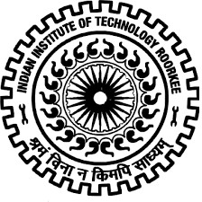

|

The institution has its origins in a class started in 1845 to train local youth in engineering to assist in public works then beginning.[3] In 1847 it was officially established.[4] It was renamed as the Thomason College of Civil Engineering in 1854 in honour of its founder, Sir James Thomason, lieutenant governor 1843–53.[3] The first Indian to graduate from the Roorkee college was Rai Bahadur Kanhaiya Lal in 1852
|
IIT Roorkee
Indian Institute of Technology Roorkee (abbreviated IIT Roorkee or IITR), formerly University of Roorkee and Thomason College of Civil Engineering, is a public engineering university located in Roorkee, Uttarakhand, India. Established in 1847 in British India by the then lieutenant governor, Sir James Thomason, it is the oldest technical institution in Asia. It was given university status in 1949 and was converted into an Indian Institute of Technology (IIT) in 2001, thus becoming the seventh IIT to be declared.
IIT Roorkee has 21 academic departments covering Engineering, Applied Sciences, Humanities & Social Sciences and Management programs with a strong emphasis on scientific and technological education and research
IIT Roorkee has a strong entrepreneurial culture, with many alumni who have moved on to found technological and social ventures in India and abroad, and have played an important role in the development of India. Ten alumni have won the Padma awards and twenty five alumni have won the Shanti Swarup Bhatnagar Prize for Science and Technology award. The institute has produced seven chairmen of the Indian Railway Board, chairman of the Telecom Regulatory Authority of India, more than a hundred secretary-level officers in the Government of India, two presidents of the Confederation of Indian Industry, Governors of states of India, Members of Parliament, chairmen of University Grants Commission (India), six directors of the Indian Institutes of Technology, Chancellors and Vice-Chancellors of prominent Indian Universities, and presidents of Engineering and Scientific organizations like the Indian Institution of Engineers, the Indian National Science Academy and the Indian National Academy of Engineering.
|